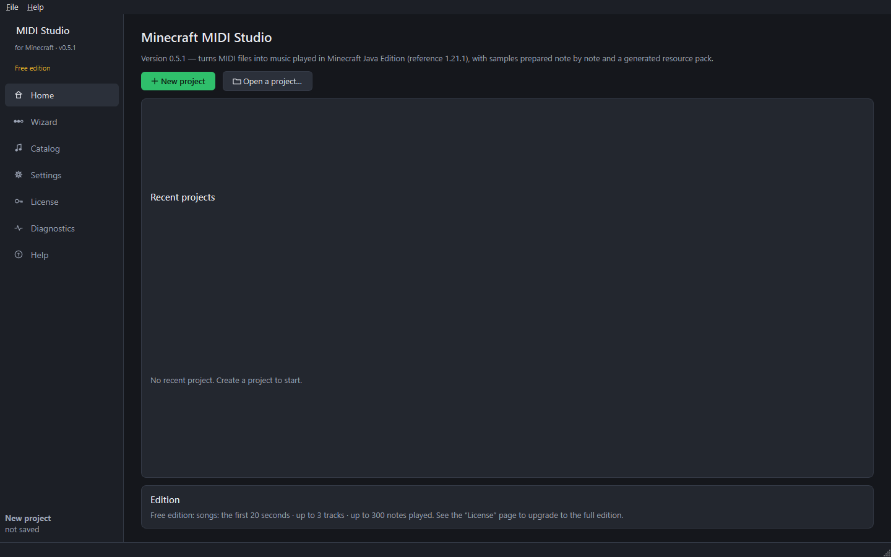

Step 1 — Installation
Goal: download Minecraft MIDI Studio and start it for the first time (about 5 minutes).
What you need
- A Windows 10 or 11 computer (64-bit).
- An internet connection at the first start (about 41 MB, only once: see below).
- Minecraft Java Edition, to play the music in your world. It does not need to be started before: the software finds the worlds of the official launcher, Modrinth, CurseForge and Prism Launcher by itself.
- About 350 MB of free disk space (program, official sounds, sample cache).
Note Block Studio is not needed. If it is installed, the full edition can also use its custom sounds.
Download
- Open the Download page of the website (GitHub Releases).
- Download
MinecraftMidiStudio-<version>-windows.exe. - Put it in a folder of your choice, for example
Documents\Minecraft MIDI Studio.
First start
- Double-click
MinecraftMidiStudio.exe. - Windows may show “Windows protected your PC” (the program is not signed with a paid certificate). Click More info, then Run anyway. This only happens the first time.
- The first start takes a few seconds longer: the program unpacks itself once into your cache folder.
- The Home page opens.

The official Minecraft sounds
The instrument and mob sounds, and the textures of the icons, belong to Mojang: they are not inside the program. The first time they are needed (opening the catalog or a project):
- if Minecraft 1.21.1 is installed on the computer, the software uses its files;
- otherwise it downloads them itself from Mojang's official servers, like a launcher: about 41 MB, only once, every file being checked against the fingerprint published by Mojang.
The progress is shown at the bottom of the window. Without internet, the software says so; the Download now button of the Settings page starts the download again later.
Where are my files?
| What | Where |
|---|---|
| Settings and license activation | %APPDATA%\MinecraftMidiStudio |
| Downloaded official sounds | %LOCALAPPDATA%\MinecraftMidiStudio\minecraft |
| Logs, sample cache, world backups | %LOCALAPPDATA%\MinecraftMidiStudio |
| Your projects | wherever you save them (.mmsproj files) |
Uninstall
Delete MinecraftMidiStudio.exe. To also remove your settings, the downloaded sounds, the cache and the backups, delete the two folders above. Nothing else is installed on your computer.
Next guide: first settings.